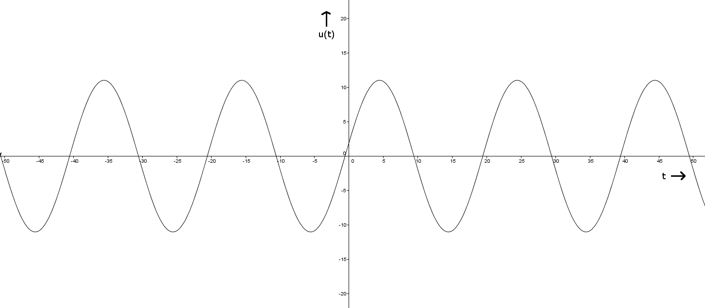
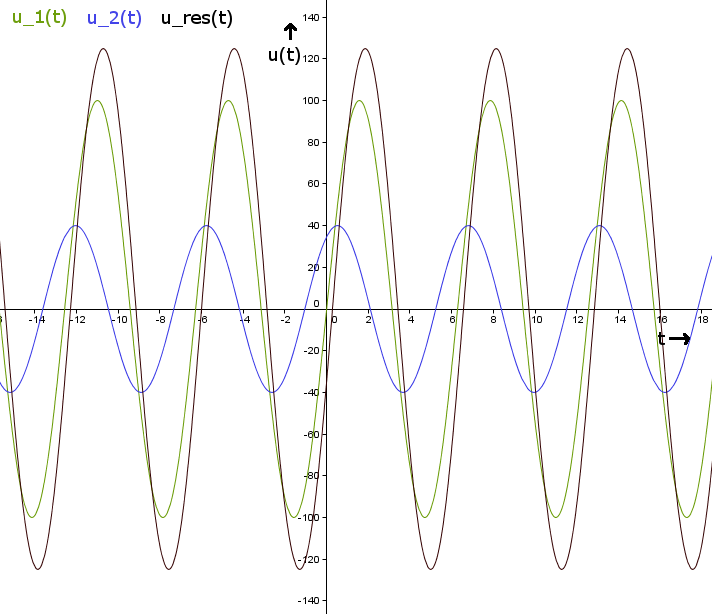
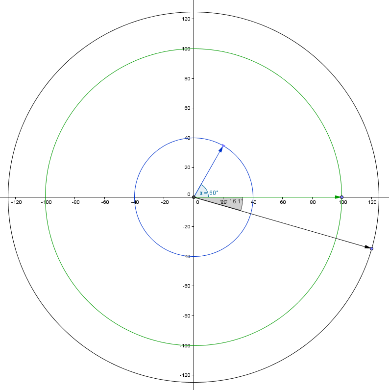

1.2c
Gegeben:\( \frac{T}{2} = 10ms \\ u(t = 0) = 2V \\ u(t = 5,5ms) = 10,41V \\ u(t) = \hat{U} sin( \omega t ~+ ~ \phi_{0}) \)
\( \omega = 2 \pi f \\ f = \frac{1}{T} \\ \omega = \frac{2 \pi}{T} = \frac{2 \pi}{20ms} = \frac{\pi}{10ms} \approx 0,3146 \\ \\ \\ u(t = 0) = \hat{U} sind(\frac{\pi}{10}ms \cdot 0 + \phi_{0}) = 2V \\ \\ \Rightarrow \hat{U} = \frac{2V}{sin(\phi_0)} ~~(I)\\ \)
\( u(t = 5,5ms) = \hat{U}sin(\frac{\pi}{10} \cdot 5,5ms + \phi_0) = 10,41V \\ \Leftrightarrow \hat{U}sin(\frac{\pi}{10} \cdot 5,5ms) \cdot cos(\phi_0) + \hat{U} cos(\frac{\pi}{10} \cdot 5,5ms) \cdot sin(\phi_0) = 10,41V \)
Einsetzen von \( (I) \):
\( \frac{2V}{sin(\phi_0)} sin(\frac{\pi}{10} \cdot 5,5ms) \cdot cos(\phi_0) + \frac{2V}{sin(\phi_0)} cos(\frac{\pi}{10} \cdot 5,5ms) sin(\phi_0) = 10,41V \\ \\ \Leftrightarrow cot(\phi_0) \cdot 2V \cdot sin(\frac{\pi}{10} \cdot 5,5ms) + 2V cos(\frac{\pi}{10} \cdot 5,5ms) = 10,41V \\ \\ \Leftrightarrow \phi_0 = arccot(\frac{10,41V - 2V cos(\frac{pi}{10} \cdot 5,5ms)}{2V \cdot sin(\frac{\pi}{10} \cdot 5,5ms)}) \approx 0,182179 \\ \\ \hat{U} = \frac{2V}{sin(\phi_0)} = \frac{2V}{sin(0,182179)} \approx 11,04 \\ \)
\( u(t) = 11,04 sin(\frac{\pi}{10} t + 0,182179) \)

(erstellt mit GeoGebra)
1.3
a)
Gegeben:\( u_1(t) = 100Vsin(\omega t) \\ u_2(t) = 40Vsin(\omega t + \frac{\pi}{3}) \\ u(t) = A_{res}sin(\omega t + \phi_{res}) = 100Vsin(\omega t) + 40Vsin(\omega t + \frac{\pi}{3}) \\ \)
\( A_{res} = \sqrt{(100V)^2 + (40V)^2 + 2 \cdot 100V \cdot 40V \cdot cos(0 - \frac{\pi}{3})} \approx 124,9 \\ \\ tan(\phi_{res}) = \frac{100Vsin(0) + 40Vsin(-\frac{\pi}{3})}{100Vcos(0) + 40Vcos(-\frac{\pi}{3})} = -\frac{\sqrt{3}}{6} \\ arctan(-\frac{\sqrt(3)}{6}) \approx -0,281 = \phi_{res} \\ u_{res}(t) = 124,9sin(\omega t - 0,281) \)
b)
(erstellt mit GeoGebra, x-Achse : y-Achse = 1 : 10)

(erstellt mit GeoGebra)